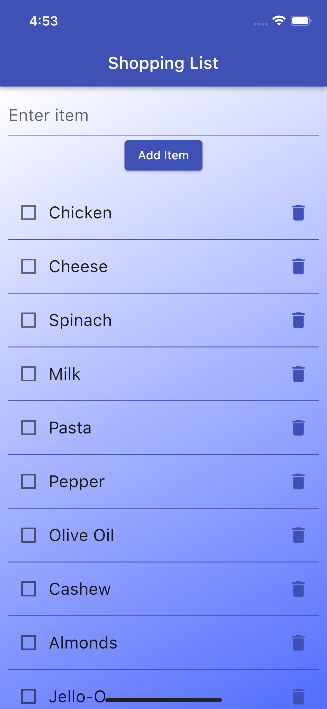
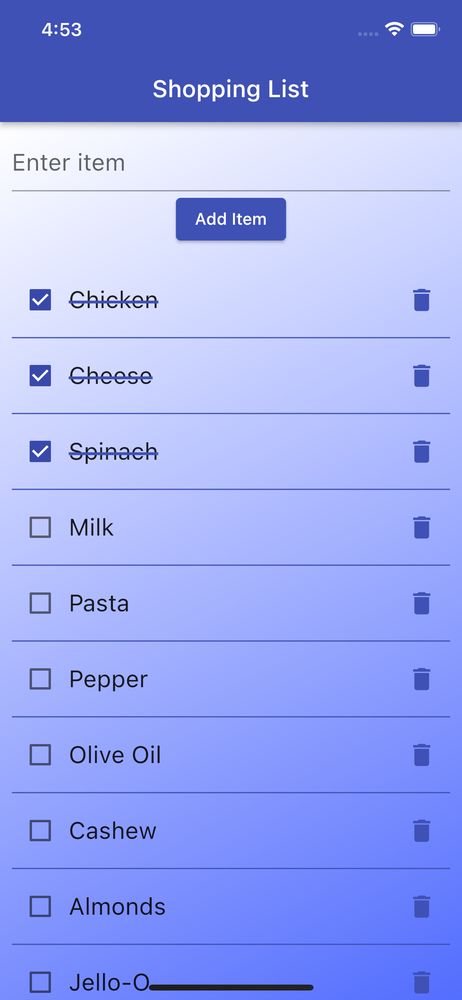
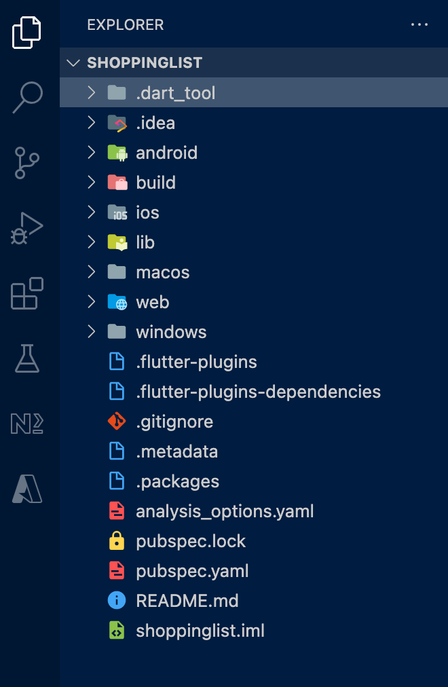
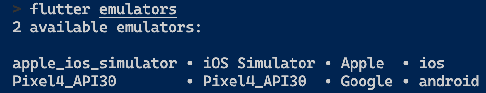
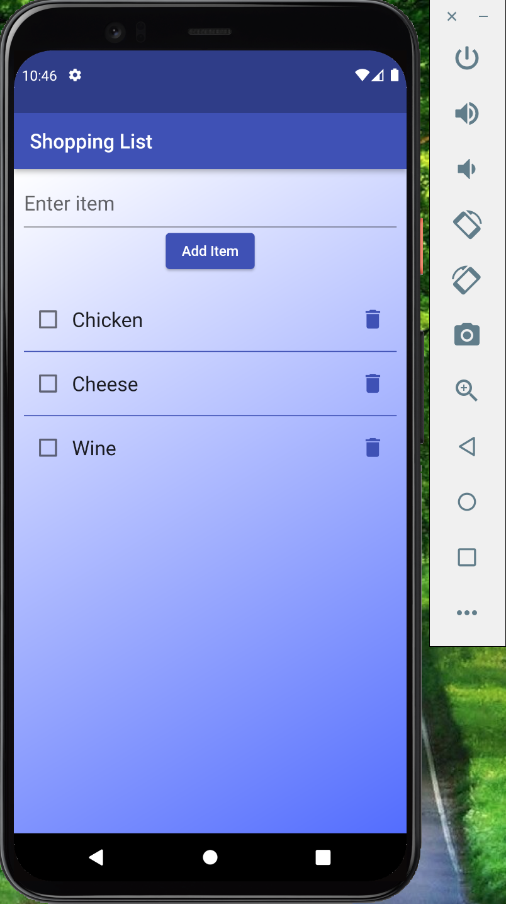

Choosing a data store for mobile applications can be a daunting experience for flutter developers.
Realm's mobile database is an open-source, developer-friendly alternative to KeyValue pairs, SQLite and Firestore. Start in minutes and save yourself weeks of work.
Realm is offline first, object-oriented, intuitive and is built for mobiles.
In this workshop, we will build an offline mobile app using Flutter and Realm SDK.

Pre-Requisites You will need below to go though this workshop
- flutter installed & configured
- your favourite IDE
Create a flutter app using below command
flutter create shoppinglist
This will create a folder named shoppinglist in your current working directory which will contain the sourcecode for your flutter application and will look something like this.

Open the directory as a project in your favourite IDE.
Next, we will add realm as a dependency in our pubspec.yaml. This can be done using below command
flutter pub add realm
Alternatively, you can open the pubspec.yaml file and add realm as a dependency:
dependencies:
# other dependecies here
realm: ^0.2.0+alpha
After adding the above, you need to run below command:
flutter pub get
That's it. Now you have everything you need to get started with Realm
Schema is the simplest unit in any Realm application. A schema defines the structure of data your application will be utilising.
For example, an Item in our Shopping List can have two properties
- text: string
- done: boolean
To represent an Item in our application, we will create a Schema. To do that, create a directory named schemas in the lib directory. This directory will contain all the schemas used in the application.
Now create a file named item.dart with below content.
import 'package:realm/realm.dart';
part 'item.g.dart';
@RealmModel()
class _Item {
@PrimaryKey()
late String text;
late bool done;
}
Generate Schema from the RealmModel class
Now that we have out schema class defined, we need to generate the Realm schema. Realm schema is generated by combining the _Item and RealmObject classes. Realm has made this task simpler for us. All we need to do is to run the below command
flutter pub run realm generate
The above command will generate a new file item.g.dart containing a class Item.
// GENERATED CODE - DO NOT MODIFY BY HAND
part of 'item.dart';
// **************************************************************************
// RealmObjectGenerator
// **************************************************************************
class Item extends _Item with RealmEntity, RealmObject {
Item(
String text,
bool done,
) {
RealmObject.set(this, 'text', text);
RealmObject.set(this, 'done', done);
}
Item._();
@override
String get text => RealmObject.get<String>(this, 'text') as String;
@override
set text(String value) => throw RealmUnsupportedSetError();
@override
bool get done => RealmObject.get<bool>(this, 'done') as bool;
@override
set done(bool value) => RealmObject.set(this, 'done', value);
@override
Stream<RealmObjectChanges<Item>> get changes =>
RealmObject.getChanges<Item>(this);
static SchemaObject get schema => _schema ??= _initSchema();
static SchemaObject? _schema;
static SchemaObject _initSchema() {
RealmObject.registerFactory(Item._);
return const SchemaObject(Item, [
SchemaProperty('text', RealmPropertyType.string, primaryKey: true),
SchemaProperty('done', RealmPropertyType.bool),
]);
}
}
Open a Realm
To work with Realm, we first need to define a Configuration object. The constructor takes in a list of Schemas you want the Realm to work with. Optionally, you can pass a readOnly and inMemory flags indicating you want the Realm to be opened in read-only mode or Realm to be loaded in-memory.
Configuration _config =
Configuration([Item.schema], readOnly: false, inMemory: false);
Realm _realm = Realm(_config);
Read all Items
RealmResults<Item> items = _realm.all<Item>();
Write an Item
_realm.write(() {
_realm.add<Item>(Item(text, false));
});
Update an Item
_realm.write(() {
item.done = true;
});
Delete an Item
_realm.write(() {
_realm.delete(item);
});
Close a Realm
if (!_realm.isClosed) {
_realm.close();
}
To manage our Realm, we will create a service class which will expose methods to open/close a realm and to perform query/update/delete operations on our Realm.
Create a directory services under lib directory. Add a new file item_service.dart with following code
import 'package:flutter/foundation.dart';
import 'package:realm/realm.dart';
import '../schemas/item.dart';
class ItemService {
final Configuration _config =
Configuration([Item.schema], readOnly: false, inMemory: false);
late Realm _realm;
ItemService() {
openRealm();
}
openRealm() {
// Realm.deleteRealm(Configuration.defaultPath);
_realm = Realm(_config);
}
closeRealm() {
if (!_realm.isClosed) {
_realm.close();
}
}
RealmResults<Item> getItems() {
return _realm.all<Item>();
}
bool addItem(String text) {
try {
_realm.write(() {
_realm.add<Item>(Item(text, false));
});
return true;
} on RealmException catch (e) {
debugPrint(e.message);
return false;
}
}
bool toggleItemStatus(Item item) {
try {
_realm.write(() {
item.done = !item.done;
});
return true;
} on RealmException catch (e) {
debugPrint(e.message);
return false;
}
}
bool deleteItem(Item item) {
try {
_realm.write(() {
_realm.delete(item);
});
return true;
} on RealmException catch (e) {
debugPrint(e.message);
return false;
}
}
}
ItemListView is essentially a ListView which renders a list of Items in our Shopping List. ItemListView component takes three required parameters:
items- A list of Item objectsonToggle- A callback function to be invoked when an Item is toggledonDelete- A callback function to be invoked when an Item is deleted
Add a new file named item_list_view.dart in components directory with below code:
import 'package:flutter/material.dart';
import '../schemas/item.dart';
class ItemListView extends StatelessWidget {
final List<Item> items;
final Function(Item) onToggle;
final Function(Item) onDelete;
const ItemListView(
{Key? key,
required this.items,
required this.onToggle,
required this.onDelete})
: super(key: key);
@override
Widget build(BuildContext context) {
return ListView.separated(
padding: const EdgeInsets.all(10),
shrinkWrap: true,
itemBuilder: getItemBuilder,
scrollDirection: Axis.vertical,
physics: const BouncingScrollPhysics(),
separatorBuilder: getSeparatorBuilder,
itemCount: items.length);
}
Widget getItemBuilder(BuildContext context, int index) {
Item item = items[index];
return Row(
mainAxisAlignment: MainAxisAlignment.spaceBetween,
children: [
Row(children: [
Checkbox(
value: item.done, onChanged: (bool? value) => {onToggle(item)}),
Text(item.text,
style: TextStyle(
decorationColor: Colors.indigo,
decorationThickness: 2,
fontSize: 20,
decoration: getTextDecoration(item.done)))
]),
IconButton(
onPressed: () => {onDelete(item)},
icon: Icon(
Icons.delete,
color: Colors.indigo,
size: 25,
semanticLabel: 'Delete ${item.text}',
))
],
);
}
Widget getSeparatorBuilder(BuildContext context, int index) {
return const Divider(
thickness: 1,
color: Colors.indigo,
);
}
TextDecoration getTextDecoration(bool isDone) {
return isDone ? TextDecoration.lineThrough : TextDecoration.none;
}
}
AddItemView is comprised of an Input Field and a Button. User can enter an item in the Input Field and when they click the Button, a new item should be created.
AddItemView component takes one required parameters:
onAdd- A callback function to be invoked when an Item is added
Add a new file named add_item_view.dart in components directory with below code:
import 'package:flutter/material.dart';
class AddItemView extends StatelessWidget {
final Function(String) onAdd;
final TextEditingController textController = TextEditingController();
AddItemView({Key? key, required this.onAdd}) : super(key: key);
@override
Widget build(BuildContext context) {
return Container(
padding: const EdgeInsets.all(10),
child: Column(
mainAxisAlignment: MainAxisAlignment.center,
crossAxisAlignment: CrossAxisAlignment.center,
children: [
TextField(
controller: textController,
style: const TextStyle(fontSize: 20),
decoration: const InputDecoration(hintText: 'Enter item'),
),
ElevatedButton(
onPressed: () => {
if (textController.text.isNotEmpty)
{onAdd(textController.text)}
},
child: const Text('Add Item'))
],
),
);
}
}
ShoppingListView is composed of the previously created components ItemListView and AddItemView and presents an aggregated view where the User can add and Item and view the List of existing Items.
ShoppingListView component takes four required parameters:
onAdd- A callback function to be invoked when an Item is addedonToggle- A callback function to be invoked when an Item is toggledonDelete- A callback function to be invoked when an Item is deleteditems- A list of Item objects
Add a new file named shopping_list_view.dart in components directory with below code:
import 'package:flutter/material.dart';
import './add_item_view.dart';
import './item_list_view.dart';
import '../schemas/item.dart';
class ShoppingListView extends StatelessWidget {
final Function(String) onAdd;
final Function(Item) onToggle;
final Function(Item) onDelete;
final List<Item> items;
const ShoppingListView(
{Key? key,
required this.onAdd,
required this.onToggle,
required this.onDelete,
required this.items})
: super(key: key);
@override
Widget build(BuildContext context) {
return Container(
decoration: const BoxDecoration(
gradient: LinearGradient(
begin: Alignment.topLeft,
end: Alignment.bottomRight,
colors: [Colors.white, Colors.indigoAccent])),
child: Column(children: [
AddItemView(
onAdd: onAdd,
),
Expanded(
child: ItemListView(
items: items,
onToggle: onToggle,
onDelete: onDelete,
))
]),
);
}
}
Now that we have our UI components and our Realm service are ready, we can stitch them together in our Home Screen. In our home screen, we will render our main app with ShoppingList as a child. We will also create callback function onAdd, onToggle and onDelete and handle various Realm operations in these functions.
Open main.dart in lib directory and replace the existing code with below:
import 'package:flutter/material.dart';
import 'package:realm/realm.dart';
import './components/shopping_list_view.dart';
import './schemas/item.dart';
import './services/item_service.dart';
void main() {
final ItemService service = ItemService();
runApp(MyApp(
service: service,
));
}
class MyApp extends StatelessWidget {
const MyApp({Key? key, required this.service}) : super(key: key);
final ItemService service;
@override
Widget build(BuildContext context) {
return MaterialApp(
title: 'Shopping List',
theme: ThemeData(
primarySwatch: Colors.indigo,
),
home: MyHomePage(
title: 'Shopping List',
service: service,
),
debugShowCheckedModeBanner: false,
);
}
}
class MyHomePage extends StatefulWidget {
const MyHomePage({Key? key, required this.title, required this.service})
: super(key: key);
final String title;
final ItemService service;
@override
State<MyHomePage> createState() => _MyHomePageState();
}
class _MyHomePageState extends State<MyHomePage> {
late RealmResults<Item> items;
onAdd(String text) {
debugPrint('Adding $text');
if (widget.service.addItem(text)) {
debugPrint('Added $text');
loadItems();
} else {
debugPrint('Something went wrong while adding $text');
}
}
onToggle(Item item) {
debugPrint('Toggling status for ${item.text}');
if (widget.service.toggleItemStatus(item)) {
loadItems();
} else {
debugPrint('Something went wrong while toggling status for ${item.text}');
}
}
onDelete(Item item) {
debugPrint('Deleting ${item.text}');
if (widget.service.deleteItem(item)) {
loadItems();
} else {
debugPrint('Something went wrong while deleting ${item.text}');
}
}
@override
void initState() {
super.initState();
loadItems();
}
void loadItems() {
setState(() {
items = widget.service.getItems();
});
}
@override
Widget build(BuildContext context) {
return Scaffold(
appBar: AppBar(
title: Text(widget.title, style: const TextStyle(color: Colors.white)),
),
body: ShoppingListView(
items: items.toList(),
onAdd: onAdd,
onToggle: onToggle,
onDelete: onDelete,
),
);
}
}
That's it. Our application is ready to be launched. Save all the code-files.
To launch the flutter application, we will first launch the emulator. Let's find the list of available emulators.
flutter emulators

Pick one of the emulator IDs from above output and launch one using below command:
flutter emulators --launch Pixel4_API30
After the emulator is launched, you can find it's device-id using below command:
flutter devices

Copy the device-id (emulator-5554), and run the flutter app using below command:
flutter run -d emulator-5554

Now that you have a Realm application running, you can continue adding more schemas or update existing schemas.
Whenever you make a change to a schema, you need to run below command to generate RealmObjects based on your schema definition.
flutter pub run realm generate
You can run the above command with a watch option to generate/update RealmObjects as and when you update your schema.
flutter pub run realm generate --watch
The sourcecode for this application is available here
Scan the QR code to connect with me on LinkedIn